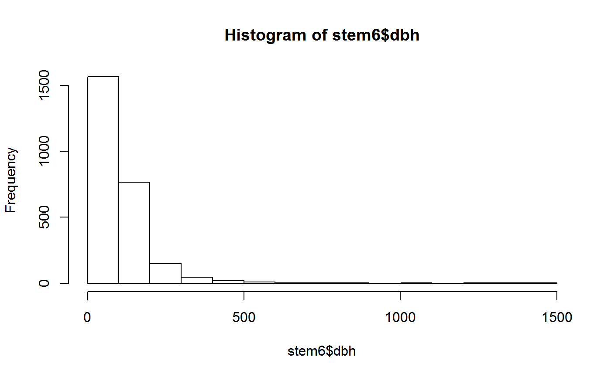
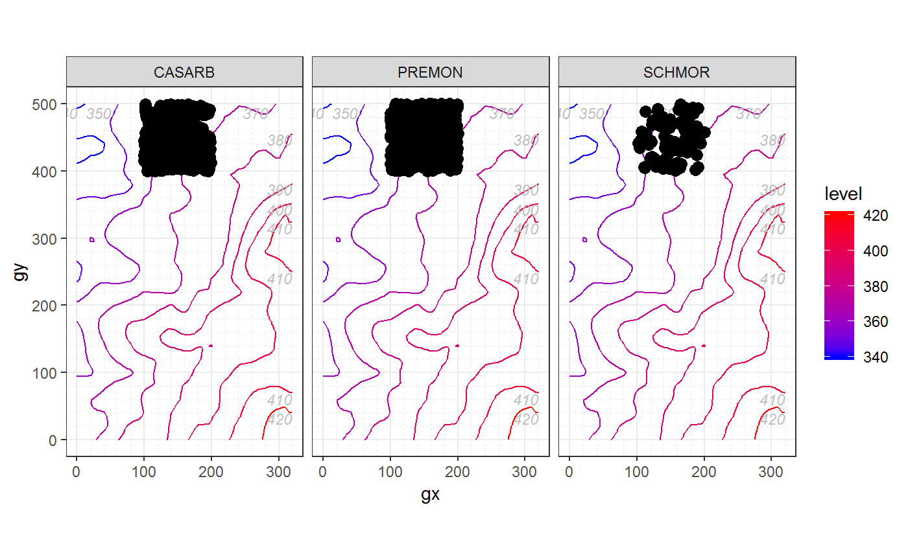
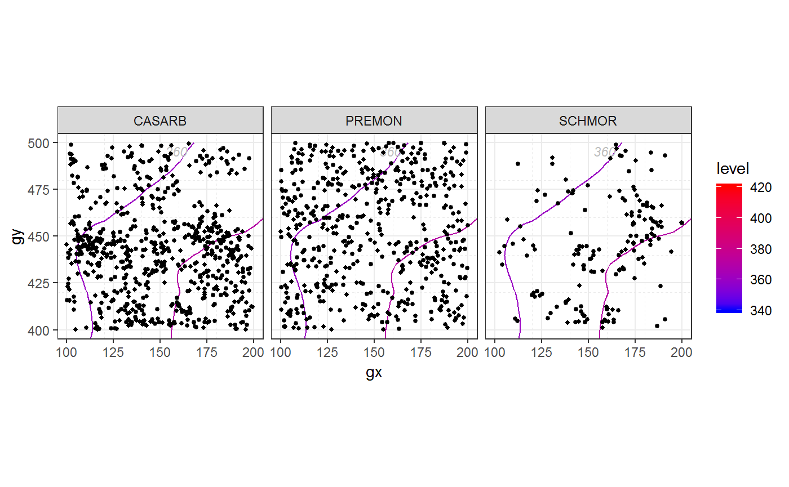
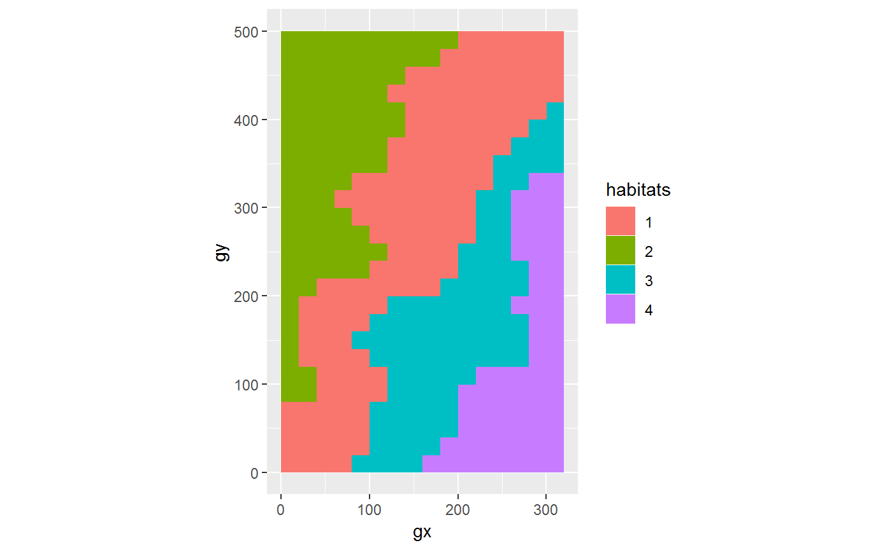

This article shows some of the key features of fgeo applied to an exploratory data analysis. For a deeper and general approach to exploratory data analysis, see this book section. A version adapted for ForestGEO is available here.
In every new R session you need to “open” fgeo with library().
library(fgeo)
#> -- Attaching packages ---------------------------------------------- fgeo 0.0.0.9000 --
#> v fgeo.abundance 0.0.0.9005 v fgeo.demography 0.0.0.9102
#> v fgeo.base 0.0.0.9001 v fgeo.habitat 0.0.0.9006
#> v fgeo.data 0.0.0.9005 v fgeo.map 0.0.0.9402
#> v fgeo.abundance 0.0.0.9005 v fgeo.tool 0.0.0.9003
#> You may load your own data. Here we will use data from the fgeo.data package – which comes with fgeo.
We will use a dataset of stems censused in one hectare from the forest plot in Luquillo, Puerto Rico (https://forestgeo.si.edu/sites/north-america/luquillo).
stem <- luquillo_stem_1ha
str(stem)
#> Classes 'tbl_df', 'tbl' and 'data.frame': 72582 obs. of 19 variables:
#> $ treeID : int 46 47 47 47 47 47 47 47 47 47 ...
#> $ stemID : int 46 47 48 49 50 51 52 53 54 55 ...
#> $ tag : chr "100001" "100008" "100008" "100008" ...
#> $ StemTag : chr "100001" "100002" "100003" "100004" ...
#> $ sp : chr "PSYBRA" "PSYBRA" "PSYBRA" "PSYBRA" ...
#> $ quadrat : chr "921" "921" "921" "921" ...
#> $ gx : num 164 165 165 165 165 ...
#> $ gy : num 416 416 416 416 416 ...
#> $ MeasureID: int 46 47 48 49 50 51 52 53 54 55 ...
#> $ CensusID : int 1 1 1 1 1 1 1 1 1 1 ...
#> $ dbh : num 22.6 15 12.8 10.9 13.4 10.8 15.4 16.6 13.3 11.1 ...
#> $ pom : chr "1.3" "1.3" "1.3" "1.3" ...
#> $ hom : num 1.3 1.3 1.3 1.3 1.3 1.3 1.3 1.3 1.3 1.3 ...
#> $ ExactDate: Date, format: "1993-07-29" "1993-07-29" ...
#> $ DFstatus : chr "alive" "alive" "alive" "alive" ...
#> $ codes : chr "MAIN;A" "SPROUT;A" "SPROUT;A" "SPROUT;A" ...
#> $ countPOM : num 1 1 1 1 1 1 1 1 1 1 ...
#> $ status : chr "A" "A" "A" "A" ...
#> $ date : num 12263 12263 12263 12263 12263 ...For a description of the columns, see ?data_dictionary.
str(data_dictionary)
#> Classes 'tbl_df', 'tbl' and 'data.frame': 242 obs. of 3 variables:
#> $ table : chr "Census" "Census" "Census" "Census" ...
#> $ column : chr "CensusID" "PlotID" "PlotCensusNumber" "StartDate" ...
#> $ description: chr "Primary key, an integer automatically generated to uniquely identify a census." "Foreign Key to Site table." "Integer census number for an individual plot, 1=first census, 2=second census, etc. If there are more than one "| __truncated__ "Date on which the first measurement of the census was taken." ...
cols <- names(stem)
filter(data_dictionary, column %in% cols)
#> # A tibble: 20 x 3
#> table column description
#> <chr> <chr> <chr>
#> 1 Census CensusID Primary key, an integer automatically genera~
#> 2 CensusQuadrat CensusID Foreign Key to Census table.
#> 3 DataCollection CensusID Foreign Key to Census table.
#> 4 DBH CensusID Foreign Key to Census table.
#> 5 DBH ExactDa~ Date on which the measurement was taken.
#> 6 DBHAttributes CensusID Foreign Key to Census table.
#> 7 Measurement Measure~ Primary key, an integer automatically genera~
#> 8 Measurement CensusID Foreign Key to Census table.
#> 9 Measurement ExactDa~ "Date on which measurement has been done (fo~
#> 10 MeasurementAtt~ Measure~ Foreign Key to Measurement table.
#> 11 MeasurementAtt~ CensusID Foreign Key to Census table.
#> 12 RemeasAttribs CensusID Foreign Key to Census table.
#> 13 Remeasurement CensusID Foreign Key to Census table.
#> 14 Remeasurement ExactDa~ "Date of remeasurement. (format is yyyy-mm-d~
#> 15 SpeciesInvento~ CensusID Foreign Key to Census table.
#> 16 Stem StemTag The stem tag used in the field to identify th~
#> 17 TreeAttributes CensusID Foreign Key to Census table.
#> 18 ViewFullTable StemTag The stem tag used in the field to identify th~
#> 19 ViewFullTable CensusID Foreign Key to Census table.
#> 20 ViewFullTable ExactDa~ Date on which the measurement was taken (form~This dataset comes with multiple censuses. We will pick only the latest one.
Two columns that are commonly useful in ForestGEO datasets are status and dbh (diameter at breast height). We will begin by better understanding what type of variables they are. For this, base R provides useful functions.
status is a categorical variable.
We can count the number of observations in each category with table(), then visualize the result with barplot().
dbh is a continuous numeric variable.
summary(stem6$dbh)
#> Min. 1st Qu. Median Mean 3rd Qu. Max. NA's
#> 10.00 21.77 56.00 93.71 142.00 1405.00 9533(Note the missing values (NAs).)
And we can visualize its distribution with hist().

Unfortunately hist() dropped missing values silently. But we can better understand how missing values of dbh relate to status by extracting only the columns dbh and status, and picking only the rows where dbh is missing.
dbh_status <- stem6[c("dbh", "status")]
missing <- filter(dbh_status, is.na(dbh))
unique(missing)
#> # A tibble: 3 x 2
#> dbh status
#> <dbl> <chr>
#> 1 NA D
#> 2 NA G
#> 3 NA AAnother approach is to count missing values.
missing <- transform(stem6, na = ifelse(is.na(dbh), TRUE, FALSE))
table(missing$na, missing$status)
#>
#> A D G
#> FALSE 2564 0 0
#> TRUE 4 5416 4113We learn that dbh is missing where a tree is dead (status = D) or gone (status = G). This makes sense and, depending on the type of analysis we want to do, we may want to keep or remove missing values.
Now we are ready to clean the data. For example, we can pick trees which status is “A” (alive). At ForestGEO, working with status is so common that fgeo provides a specialized function.
In stem6, the variable status records the status of each individual stem. How can we determine the status of a tree based on the status of each of its stems? That is the job of add_status_tree().
stem6 <- add_status_tree(stem6, status_a = "A", status_d = "D")
alive_trees <- filter(stem6, status_tree == "A")
# Note that alive trees may have some missing, gone or dead stems
some_cols <- c( "treeID", "status_tree", "stemID", "status")
example_tree <- 46
example_rows <- filter(alive_trees, treeID == example_tree)
select(example_rows, some_cols)
#> # A tibble: 2 x 4
#> treeID status_tree stemID status
#> <int> <chr> <int> <chr>
#> 1 46 A 46 D
#> 2 46 A 114033 Gdbh rangeAnother very common task when working with ForestGEO data is to pick stems of a particular dbh range.
Pick stems of 10 mm or more.
Calculate the total abundance of stems and trees.
# Stem abundance
abundance(non_missing)
#> Warning: `treeid`: Duplicated values were detected. Do you need to pick
#> main stems?
#> # A tibble: 1 x 1
#> n
#> <int>
#> 1 2564
# Tree abundance (picking main stems -- with highest `hom` and largest `dbh`)
main_stems <- pick_main_stem(non_missing)
abundance(main_stems)
#> # A tibble: 1 x 1
#> n
#> <int>
#> 1 2319Calculate the abundance of trees by species.
by_sp <- group_by(main_stems, sp)
n_by_sp <- abundance(by_sp)
n_by_sp
#> # A tibble: 70 x 2
#> # Groups: sp [70]
#> sp n
#> <chr> <int>
#> 1 ALCFLO 11
#> 2 ALCLAT 15
#> 3 ANDINE 1
#> 4 ANTOBT 1
#> 5 ARDGLA 1
#> 6 BUCTET 11
#> 7 BYRSPI 25
#> 8 CALCAL 2
#> 9 CASARB 489
#> 10 CASSYL 58
#> # ... with 60 more rowsWhat are the three most abundant tree species?
top3 <- pick_top(n_by_sp, n, -3)
top3
#> # A tibble: 3 x 2
#> # Groups: sp [3]
#> sp n
#> <chr> <int>
#> 1 CASARB 489
#> 2 PREMON 507
#> 3 SCHMOR 151Now we can pick the alive_trees of only the top3 species.
fgeo includes some functions specialized in mapping ForestGEO’s data.
Map the most abundant species.
# luquillo_elevation comes with fgeo
species_elevation <- sp_elev(picked_stems, luquillo_elevation)
autoplot(species_elevation)
Tweak to focus on the hectare available in the data.

We will determine the species-habitat associations using a torus translation test.
This test should use individual trees, not multiple stems of individual trees. This test only makes sense at the population level. We are interested in knowing whether individuals of a species are aggregated on a habitat. Multiple stems of an individual do not represent population level processes but individual level processes. We will then use a ForestGEO tree table, luquillo_tree6_random, which contains a small sample of randomly chosen trees across the entire plot (see ?luquillo_tree6_random).
We will pick alive trees of 10 mm or more (for details see previous sections). The variable status of tree tables directly represent the status of each tree (see ?census_description). We will focus on trees with status “A” (alive).
dbh10plus <- pick_dbh_min(tree, 10)
chosen_trees <- pick_status(dbh10plus, "A")
unique(chosen_trees$status)
#> [1] "A"Note that tt_test() is recommended for sufficiently abundant species:
You should only try to determine the habitat association for sufficiently abundant species. In a 50-ha plot, a minimum abundance of 50 trees/species has been used.
– ?tt_test()
# Find sufficiently abundant species
by_sp <- group_by(tree, sp)
n_by_sp <- abundance(by_sp)
n_by_sp
#> # A tibble: 73 x 2
#> # Groups: sp [73]
#> sp n
#> <chr> <int>
#> 1 ALCFLO 3
#> 2 ALCLAT 1
#> 3 ANDINE 2
#> 4 ARDGLA 2
#> 5 ARTALT 1
#> 6 BRUPOR 1
#> 7 BUCTET 8
#> 8 BYRSPI 11
#> 9 CALCAL 1
#> 10 CASARB 94
#> # ... with 63 more rows
n_sp50plus <- filter(n_by_sp, n > 50)
n_sp50plus
#> # A tibble: 3 x 2
#> # Groups: sp [3]
#> sp n
#> <chr> <int>
#> 1 CASARB 94
#> 2 PREMON 252
#> 3 SLOBER 84We need habitat data. Bad habitat data is a common cause of errors. The safest way to create it is with fgeo_habitat() (see ?fgeo_habitat()).
habitat <- fgeo_habitat(luquillo_elevation, gridsize = 20, n = 4)
str(habitat)
#> Classes 'fgeo_habitat', 'tbl_df', 'tbl' and 'data.frame': 400 obs. of 3 variables:
#> $ gx : num 0 0 0 0 0 0 0 0 0 0 ...
#> $ gy : num 0 20 40 60 80 100 120 140 160 180 ...
#> $ habitats: int 1 1 1 1 1 1 1 1 1 1 ...You can visualize the habitats with plot().

FYI, habitats result from hierarchical clustering on three variables computed from the elevation dataset: mean elevation, convexity and slope.
fgeo_topography(luquillo_elevation, gridsize = 20, n = 4)
#> # A tibble: 400 x 5
#> gx gy meanelev convex slope
#> * <dbl> <dbl> <dbl> <dbl> <dbl>
#> 1 0 0 365. -0.390 8.87
#> 2 0 20 365. -0.285 13.7
#> 3 0 40 367. 0.210 14.4
#> 4 0 60 367. 0.34 15.9
#> 5 0 80 362. -0.255 20.8
#> 6 0 100 358. -0.510 12.4
#> 7 0 120 359. -0.28 17.1
#> 8 0 140 360. -0.265 22.1
#> 9 0 160 362. 0.055 24.3
#> 10 0 180 364. 0.415 15.2
#> # ... with 390 more rowsAnd now we are ready to run the test.
tt <- tt_test(chosen_trees, sp = n_sp50plus$sp, habitat = habitat)
#> Using `plotdim = c(320, 500)`. To change this value see `?tt_test()`.
#> Using `gridsize = 20`. To change this value see `?tt_test()`.The output of tt_test() is a list. Large lists are awkward to view – unless you use View() in RStudio.
You can reduce the tt from a list of matrices to a single matrix with Reduce().
Reduce(rbind, tt)
#> N.Hab.1 Gr.Hab.1 Ls.Hab.1 Eq.Hab.1 Rep.Agg.Neut.1 Obs.Quantile.1
#> CASARB 29 1418 179 3 0 0.886250
#> PREMON 91 1483 116 1 0 0.926875
#> SLOBER 18 387 1212 1 0 0.241875
#> N.Hab.2 Gr.Hab.2 Ls.Hab.2 Eq.Hab.2 Rep.Agg.Neut.2 Obs.Quantile.2
#> CASARB 20 416 1182 2 0 0.26000
#> PREMON 89 1142 455 3 0 0.71375
#> SLOBER 24 810 788 2 0 0.50625
#> N.Hab.3 Gr.Hab.3 Ls.Hab.3 Eq.Hab.3 Rep.Agg.Neut.3 Obs.Quantile.3
#> CASARB 12 804 790 6 0 0.502500
#> PREMON 40 409 1189 2 0 0.255625
#> SLOBER 17 1182 414 4 0 0.738750
#> N.Hab.4 Gr.Hab.4 Ls.Hab.4 Eq.Hab.4 Rep.Agg.Neut.4 Obs.Quantile.4
#> CASARB 5 554 1040 6 0 0.34625
#> PREMON 14 76 1523 1 0 0.04750
#> SLOBER 7 912 680 8 0 0.57000Alternatively, transform the list to a dataframe.
tt_df <- to_df(tt)
tt_df
#> # A tibble: 12 x 8
#> habitat sp distribution stem_count Eq.Hab Gr.Hab Ls.Hab Obs.Quantile
#> * <chr> <chr> <chr> <dbl> <dbl> <dbl> <dbl> <dbl>
#> 1 1 CASARB neutral 29 3 1418 179 0.886
#> 2 1 PREMON neutral 91 1 1483 116 0.927
#> 3 1 SLOBER neutral 18 1 387 1212 0.242
#> 4 2 CASARB neutral 20 2 416 1182 0.26
#> 5 2 PREMON neutral 89 3 1142 455 0.714
#> 6 2 SLOBER neutral 24 2 810 788 0.506
#> 7 3 CASARB neutral 12 6 804 790 0.502
#> 8 3 PREMON neutral 40 2 409 1189 0.256
#> 9 3 SLOBER neutral 17 4 1182 414 0.739
#> 10 4 CASARB neutral 5 6 554 1040 0.346
#> 11 4 PREMON neutral 14 1 76 1523 0.0475
#> 12 4 SLOBER neutral 7 8 912 680 0.570In this section we will krige soil data.
fgeo provides a fake soil dataset for examples.
str(soil_fake)
#> Classes 'tbl_df', 'tbl' and 'data.frame': 30 obs. of 5 variables:
#> $ gx: int 40 56 61 67 113 173 239 257 283 294 ...
#> $ gy: int 193 30 102 110 16 134 252 442 288 181 ...
#> $ mg: num 0.67 0.5 0.65 0.5 0.56 0.74 0.47 0.52 0.45 0.7 ...
#> $ c : num 1.75 2.25 2.05 2.35 1.45 1.55 0.85 2.25 0.45 2.45 ...
#> $ p : num 6.5 5.9 6.4 6.4 6.2 7 5.9 6.2 6.7 7.1 ...The data contains multiple soil variables; here we use only two of them.
The output is a nested list, which is awkward to view on the console but you can view it in RStudio with View() and summarize it with summary()
summary(krig_list)
#> var: c
#> df
#> Classes 'tbl_df', 'tbl' and 'data.frame': 1150 obs. of 3 variables:
#> $ x: num 10 30 50 70 90 110 130 150 170 190 ...
#> $ y: num 10 10 10 10 10 10 10 10 10 10 ...
#> $ z: num 2.13 2.12 2.1 2.09 2.07 ...
#>
#> df.poly
#> Classes 'tbl_df', 'tbl' and 'data.frame': 1150 obs. of 3 variables:
#> $ gx: num 10 30 50 70 90 110 130 150 170 190 ...
#> $ gy: num 10 10 10 10 10 10 10 10 10 10 ...
#> $ z : num 2.13 2.12 2.1 2.09 2.07 ...
#>
#> lambda
#> 'numeric'
#> num 1
#>
#> vg
#> 'variogram'
#> List of 20
#> $ u : num [1:9] 60.9 86.5 103 122.7 146.1 ...
#> $ v : num [1:9] 0.284 0.422 0.882 0.543 0.211 ...
#> $ n : num [1:9] 7 9 10 10 18 19 36 34 38
#> $ sd : num [1:9] 0.414 0.48 0.633 0.501 0.405 ...
#> $ bins.lim : num [1:31] 1.00e-12 2.00 2.38 2.84 3.38 ...
#> $ ind.bin : logi [1:30] FALSE FALSE FALSE FALSE FALSE FALSE ...
#> $ var.mark : num 0.317
#> $ beta.ols : num 1.36e-09
#> $ output.type : chr "bin"
#> $ max.dist : num 320
#> $ estimator.type : chr "classical"
#> $ n.data : int 30
#> $ lambda : num 1
#> $ trend : chr "cte"
#> $ pairs.min : num 5
#> $ nugget.tolerance: num 1e-12
#> $ direction : chr "omnidirectional"
#> $ tolerance : chr "none"
#> $ uvec : num [1:30] 1 2.19 2.61 3.11 3.7 ...
#> $ call : language variog(geodata = geodata, breaks = breaks, trend = trend, pairs.min = 5)
#>
#> vm
#> 'variomodel', variofit'
#> List of 17
#> $ nugget : num 0.352
#> $ cov.pars : num [1:2] 0 160
#> $ cov.model : chr "exponential"
#> $ kappa : num 0.5
#> $ value : num 4.64
#> $ trend : chr "cte"
#> $ beta.ols : num 1.36e-09
#> $ practicalRange : num 480
#> $ max.dist : num 320
#> $ minimisation.function: chr "optim"
#> $ weights : chr "npairs"
#> $ method : chr "WLS"
#> $ fix.nugget : logi FALSE
#> $ fix.kappa : logi TRUE
#> $ lambda : num 1
#> $ message : chr "optim convergence code: 0"
#> $ call : language variofit(vario = vg, ini.cov.pars = c(initialVal, startRange), cov.model = varModels[i], nugget = initialVal)
#>
#> var: p
#> df
#> Classes 'tbl_df', 'tbl' and 'data.frame': 1150 obs. of 3 variables:
#> $ x: num 10 30 50 70 90 110 130 150 170 190 ...
#> $ y: num 10 10 10 10 10 10 10 10 10 10 ...
#> $ z: num 6.37 6.35 6.33 6.31 6.29 ...
#>
#> df.poly
#> Classes 'tbl_df', 'tbl' and 'data.frame': 1150 obs. of 3 variables:
#> $ gx: num 10 30 50 70 90 110 130 150 170 190 ...
#> $ gy: num 10 10 10 10 10 10 10 10 10 10 ...
#> $ z : num 6.37 6.35 6.33 6.31 6.29 ...
#>
#> lambda
#> 'numeric'
#> num 1
#>
#> vg
#> 'variogram'
#> List of 20
#> $ u : num [1:9] 60.9 86.5 103 122.7 146.1 ...
#> $ v : num [1:9] 0.396 0.4 0.11 0.402 0.385 ...
#> $ n : num [1:9] 7 9 10 10 18 19 36 34 38
#> $ sd : num [1:9] 0.592 0.414 0.133 0.409 0.488 ...
#> $ bins.lim : num [1:31] 1.00e-12 2.00 2.38 2.84 3.38 ...
#> $ ind.bin : logi [1:30] FALSE FALSE FALSE FALSE FALSE FALSE ...
#> $ var.mark : num 0.267
#> $ beta.ols : num -3.14e-09
#> $ output.type : chr "bin"
#> $ max.dist : num 320
#> $ estimator.type : chr "classical"
#> $ n.data : int 30
#> $ lambda : num 1
#> $ trend : chr "cte"
#> $ pairs.min : num 5
#> $ nugget.tolerance: num 1e-12
#> $ direction : chr "omnidirectional"
#> $ tolerance : chr "none"
#> $ uvec : num [1:30] 1 2.19 2.61 3.11 3.7 ...
#> $ call : language variog(geodata = geodata, breaks = breaks, trend = trend, pairs.min = 5)
#>
#> vm
#> 'variomodel', variofit'
#> List of 17
#> $ nugget : num 0.305
#> $ cov.pars : num [1:2] 0 160
#> $ cov.model : chr "exponential"
#> $ kappa : num 0.5
#> $ value : num 0.818
#> $ trend : chr "cte"
#> $ beta.ols : num -3.14e-09
#> $ practicalRange : num 479
#> $ max.dist : num 320
#> $ minimisation.function: chr "optim"
#> $ weights : chr "npairs"
#> $ method : chr "WLS"
#> $ fix.nugget : logi FALSE
#> $ fix.kappa : logi TRUE
#> $ lambda : num 1
#> $ message : chr "optim convergence code: 0"
#> $ call : language variofit(vario = vg, ini.cov.pars = c(initialVal, startRange), cov.model = varModels[i], nugget = initialVal)You can also pull a dataframe containing the results of all the soil variables.
krig_df <- to_df(krig_list, item = "df")
as_tibble(filter(krig_df,var == "c"))
#> # A tibble: 1,150 x 4
#> var x y z
#> <chr> <dbl> <dbl> <dbl>
#> 1 c 10 10 2.13
#> 2 c 30 10 2.12
#> 3 c 50 10 2.10
#> 4 c 70 10 2.09
#> 5 c 90 10 2.07
#> 6 c 110 10 2.06
#> 7 c 130 10 2.04
#> 8 c 150 10 2.03
#> 9 c 170 10 2.01
#> 10 c 190 10 2.00
#> # ... with 1,140 more rows
as_tibble(filter(krig_df, var == "p"))
#> # A tibble: 1,150 x 4
#> var x y z
#> <chr> <dbl> <dbl> <dbl>
#> 1 p 10 10 6.37
#> 2 p 30 10 6.35
#> 3 p 50 10 6.33
#> 4 p 70 10 6.31
#> 5 p 90 10 6.29
#> 6 p 110 10 6.27
#> 7 p 130 10 6.26
#> 8 p 150 10 6.24
#> 9 p 170 10 6.23
#> 10 p 190 10 6.21
#> # ... with 1,140 more rows